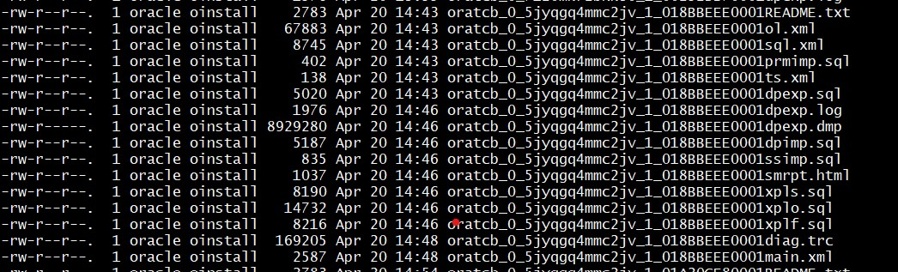

This was first published on https://www.dbi-services.com/blog/oracle-support-easy-export-of-sql-testcase/ (2020-04-20)
Republishing here for new followers. The content is related to the versions available at the publication date.
.
Many people complain about the quality of support. And there are some reasons behind that. But before complaining, be sure that you provide all information. Because one reason for inefficient Service Request handling is the many incomplete tickets the support engineers have to manage. Oracle provides the tools to make this easy for you and for them. Here I’ll show how easy it is to provide a full testcase with DBMS_DIAG. I’m not talking about hours spent to identify the tables involved, the statistics, the parameters,… All that can be done autonomously with a single command as soon as you have the SQL text or SQL_ID.
In my case, I’ve reproduced my problem (very long parse time) with the following:
set linesize 120 pagesize 1000
variable sql clob
exec select sql_text into :sql from dba_hist_sqltext where sql_id='5jyqgq4mmc2jv';
alter session set optimizer_features_enable='18.1.0';
alter session set tracefile_identifier='5jyqgq4mmc2jv';
select value from v$diag_info where name='Default Trace File';
alter session set events 'trace [SQL_Compiler.*]';
exec execute immediate 'explain plan for '||:sql;
alter session set events 'trace [SQL_Compiler.*] off';
I was too lazy to copy the big SQL statement, so I get it directly from AWR. Because it is a parsing problem, I just run an EXPLAIN PLAN. I set Optimizer Feature Enable to my current version because the first workaround in production was to keep the previous version. I ran a “SQL Compiler” trace, aka event 10053, in order to get the timing information (which I described in a previous blog post). But that’s not the topic. Rather than providing those huge traces to Oracle Support, better to give an easy to reproduce test case.
So this is the only thing I added to get it:
variable c clob
exec DBMS_SQLDIAG.EXPORT_SQL_TESTCASE(directory=>'DATA_PUMP_DIR',sql_text=>:sql,testcase=>:c);
Yes, that’s all. This generates the following files in my DATA_PUMP_DIR directory: 
There’s a README, there’s a dump of the objects (I used the default which exports only metadata and statistics), there’s the statement, the system statistics,… you can play with this or simply import the whole with DBMS_SQLDIAG.
I just tar’ed this and copy it to another environment (I provisioned a 20c database in the Oracle Cloud for that) and ran the following:
grant DBA to DEMO identified by demo container=current;
connect demo/demo@&_connect_identifier
create or replace directory VARTMPDPDUMP as '/var/tmp/dpdump';
variable c clob
exec DBMS_SQLDIAG.IMPORT_SQL_TESTCASE(directory=>'VARTMPDPDUMP',filename=>'oratcb_0_5jyqgq4mmc2jv_1_018BBEEE0001main.xml');
@ oratcb_0_5jyqgq4mmc2jv_1_01A20CE80001xpls.sql
And that’s all. This imported all the objects and statistics to exactly reproduce my issue. Now that it reproduces everywhere, I can open a SR, with a short description and the SQL Testcase files (5 MB here). It is not always easy to reproduce a problem, but if you can reproduce it in your environment, there’s a good chance that you can quickly export what is required to reproduce it in another environment.
SQL Testcase Builder is available in any edition. You can use it yourself to reproduce in pre-production a production issue or to provide a testcase to the Oracle Support. Or to send to your preferred troubleshooting consultant: we are doing more and more remote expertise, and reproducing an issue in-house is the most efficient way to analyze a problem.
{kind=link}